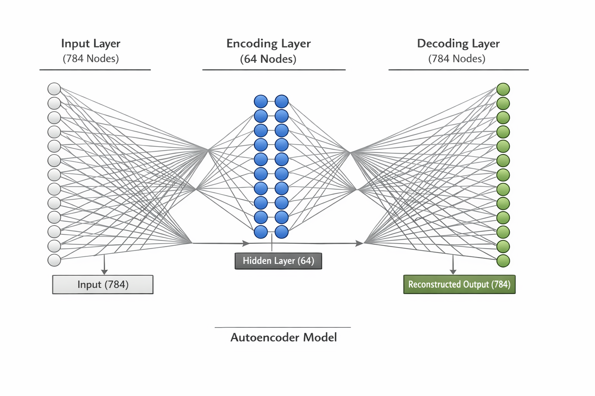

Ein Autoencoder ist ein neuronales Netzwerk, das lernt, Daten zu komprimieren und wieder zu rekonstruieren. Die Grundidee besteht darin, ein neuronales Netz so zu trainieren, dass es eine Eingabe zunächst in eine niedrigdimensionale Darstellung (Kodierung) überführt und anschließend aus dieser komprimierten Darstellung die ursprüngliche Eingabe wiederherstellt (Dekodierung).
Mit anderen Worten: Autoencoders sind ein Verfahren des unüberwachten Lernens, das lernt, Daten zu komprimieren, indem eine kompakte Repräsentation der Eingabedaten (die Kodierung) erstellt wird und daraus die ursprünglichen Daten wieder rekonstruiert werden (die Dekodierung).
Autoencoder sind für viele Aufgaben geeignet, zum Beispiel für Dimensionsreduktion, Datenkompression und Rauschunterdrückung. Sie werden außerdem in der Bild- und Spracherkennung sowie der Verarbeitung natürlicher Sprache eingesetzt.
Autoencoder werden mit Backpropagation trainiert, wobei die Gewichte des neuronalen Netzes so angepasst werden, dass der Unterschied zwischen der ursprünglichen Eingabe und der rekonstruierten Ausgabe minimiert wird. Es gibt verschiedene Varianten von Autoencodern, darunter einfache Autoencoder, Denoising Autoencoder, Variational Autoencoder und Convolutional Autoencoder, jeder mit eigenen Architekturen und Anwendungsfällen.
1.1 Einfacher Autoencoder
Ein einfacher Autoencoder könnte so aussehen:

einfacher_Autoencoder.png
from tensorflow.keras.layers import Input, Densefrom tensorflow.keras.models import Model# Define input sizeinput_size =784# 28x28# Define encoding and decoding sizeencoding_size =64# Define input layerinput_layer = Input(shape=(input_size,))# Define encoding layerencoding_layer = Dense(encoding_size, activation='relu')(input_layer)# Define decoding layerdecoding_layer = Dense(input_size, activation='sigmoid')(encoding_layer)# Create the autoencoder modelautoencoder = Model(input_layer, decoding_layer)# Compile the modelautoencoder.compile(optimizer='adam', loss='binary_crossentropy')# Print the model summaryautoencoder.summary()
In diesem Beispiel wird ein einfacher Autoencoder mit einer einzelnen verdeckten Schicht aus 64 Neuronen erstellt. Er kodiert ein Eingabebild der Größe 784 (28×28 Pixel) in eine kleinere Darstellung und dekodiert es anschließend wieder zum ursprünglichen Bild. Als Verlustfunktion wird die binäre Kreuzentropie und als Optimierer Adam verwendet. Nach dem Erstellen und Kompilieren des Modells kann es mit der Methode fit() auf den Trainingsdaten trainiert werden.
## Daten einlesen#| code-fold: true#| code-summary: "Code anzeigen"import numpy as npimport matplotlib.pyplot as pltfrom glob import globimport reimport cv2# Funktion zur numerischen Sortierung der Dateiendef extract_number(filename):returnint(re.search(r"_sortiert(\d+)", filename).group(1))# Alle Files einleden, die mit Zahlen_Handschrift_sortiert beginnen und direkt darauf folgend eine Zahl im Namen haben.liste_daten = glob('Daten/UeberwachtesLernen/Zahlen_Handschrift_sortiert*[0-9].png')# Liste numerisch sortieren und sortierte Liste ausgebenliste_daten =sorted(liste_daten, key=extract_number)for el in liste_daten:print(el)#| code-fold: true#| code-summary: "Code anzeigen"def imshow(name, img, size=8):import matplotlib.pyplot as pltfrom IPython.display import displayimport cv2# Convert BGR to RGBiflen(img.shape) ==3and img.shape[2] ==3: img = cv2.cvtColor(img, cv2.COLOR_BGR2RGB) h, w = img.shape[:2] aspect = w / h plt.figure(figsize=(size * aspect, size)) plt.imshow(img, cmap='gray'iflen(img.shape) ==2elseNone) plt.title(name) plt.axis('off')#plt.show()# contours are not sorted, so sort them to assign the correct labels laterdef sort_contours_grid(contours, row_height=50):# Extract bounding boxes bounding_boxes = [cv2.boundingRect(c) for c in contours]# Combine contours with their boxes contours_with_boxes =list(zip(contours, bounding_boxes))# First sort top-to-bottom by y contours_with_boxes.sort(key=lambda b: b[1][1]) # b[1][1] = y# Group contours into rows based on y rows = [] current_row = [] last_y =-row_heightfor c, (x, y, w, h) in contours_with_boxes:if y - last_y > row_height:if current_row: rows.append(current_row) current_row = [(c, (x, y, w, h))] last_y = yelse: current_row.append((c, (x, y, w, h)))if current_row: rows.append(current_row)# Now sort each row left to right sorted_contours = []for row in rows: row.sort(key=lambda b: b[1][0]) # sort by x sorted_contours.extend([c for c, _ in row])return sorted_contours#| code-fold: true#| code-summary: "Code anzeigen"contour_height =23x_data_list = []response_list = []## Alle Bilder auswertenfor im in liste_daten:print(im) image = cv2.imread(im) gray = cv2.cvtColor(image,cv2.COLOR_BGR2GRAY) blur = cv2.GaussianBlur(gray,(5,5),0) thresh = cv2.adaptiveThreshold(blur,255,1,1,11,2)# find digits in image and create contours contours, hierarchy = cv2.findContours(thresh, cv2.RETR_EXTERNAL, cv2.CHAIN_APPROX_SIMPLE) no_digits =0#plt.figure(figsize = (10,15))#plt.imshow(image, cmap='gray')#plt.title(im)# jetzt rotes Viereck um jede Zahl zeichnenfor cnt in contours:if cv2.contourArea(cnt) >50: x, y, w, h = cv2.boundingRect(cnt)if h > contour_height: no_digits +=1# plt.gca().add_patch(plt.Rectangle((x, y), w, h, edgecolor='red', facecolor='none', linewidth=2))#Sortieren der Konturen von oben nach unten und links nach rechts contours = sort_contours_grid(contours)for cnt in contours:# print(cv2.contourArea(cnt))if cv2.contourArea(cnt) >50: x, y, w, h = cv2.boundingRect(cnt)if h > contour_height: roi = thresh[y:y+h, x:x+w] roismall = cv2.resize(roi, (28, 28)) x_data_list.append(roismall)# now generate labelsprint(no_digits, no_digits/10)# create list of labels list_of_digits = [0,1,2,3,4,5,6,7,8,9]for element inrange(int(no_digits/10)): response_list.append(list_of_digits)#finalize the datax_data = np.array(x_data_list)response = np.array(response_list)y_data = response.flatten()
Ein normaler Autoencoder komprimiert jede Eingabe auf einen festen Punkt im latenten Raum. Das Problem: Zwischen zwei gelernten Punkten liegt oft nichts Sinnvolles – der latente Raum hat “Lücken”.
Ein Variational Autoencoder (VAE) löst das, indem er statt eines festen Punktes eine Wahrscheinlichkeitsverteilung lernt:
Der Encoder liefert nicht mehr einen Punkt \(h\), sondern einen Mittelwert\(\mu\) und eine Streuung\(\sigma\).
Daraus wird \(h\) zufällig gezogen: \(h \sim \mathcal{N}(\mu, \sigma)\)
Der Decoder muss trotzdem korrekt rekonstruieren – auch wenn \(h\) leicht variiert.
Das zwingt das Netz dazu, den latenten Raum zusammenhängend und geordnet zu halten. Benachbarte Punkte im latenten Raum ergeben ähnliche Ausgaben.
Original und Rekonstruktion sollen möglichst ähnlich sein
KL-Divergenz
Die gelernte Verteilung soll nah an der Standardnormalverteilung bleiben
Die KL-Divergenz verhindert, dass der Encoder die Verteilungen zu weit auseinanderzieht und sorgt so dafür, dass der latente Raum “lückenlos” bleibt.
2.2 Warum ist das nützlich?
Da der gesamte latente Raum sinnvoll befüllt ist, kann man neue Daten generieren: Man zieht einen zufälligen Punkt aus \(\mathcal{N}(0,1)\) und schickt ihn durch den Decoder – das Ergebnis ist ein neues, plausibles Bild.
Das folgende Beispiel trainiert einen VAE auf dem MNIST-Datensatz und erzeugt neue Ziffernbilder:
import numpy as npimport tensorflow as tffrom tensorflow import kerasfrom tensorflow.keras import layersimport matplotlib.pyplot as pltlatent_dim =2encoder_inputs = keras.Input(shape=(28, 28, 1))x = layers.Conv2D(32, 3, activation="relu", strides=2, padding="same")(encoder_inputs)x = layers.Conv2D(64, 3, activation="relu", strides=2, padding="same")(x)x = layers.Flatten()(x)x = layers.Dense(16, activation="relu")(x)z_mean = layers.Dense(latent_dim, name="z_mean")(x)z_log_var = layers.Dense(latent_dim, name="z_log_var")(x)encoder = keras.Model(encoder_inputs, [z_mean, z_log_var], name="encoder")latent_inputs = keras.Input(shape=(latent_dim,))x = layers.Dense(7*7*64, activation="relu")(latent_inputs)x = layers.Reshape((7, 7, 64))(x)x = layers.Conv2DTranspose(64, 3, activation="relu", strides=2, padding="same")(x)x = layers.Conv2DTranspose(32, 3, activation="relu", strides=2, padding="same")(x)decoder_outputs = layers.Conv2DTranspose(1, 3, activation="sigmoid", padding="same")(x)decoder = keras.Model(latent_inputs, decoder_outputs, name="decoder")class VAE(keras.Model):def__init__(self, encoder, decoder, **kwargs):super(VAE, self).__init__(**kwargs)self.encoder = encoderself.decoder = decoderdef train_step(self, data):ifisinstance(data, tuple): data = data[0]with tf.GradientTape() as tape: z_mean, z_log_var =self.encoder(data) z =self.sampling((z_mean, z_log_var)) reconstruction =self.decoder(z) reconstruction_loss = tf.reduce_mean( keras.losses.binary_crossentropy(data, reconstruction) ) reconstruction_loss *=28*28 kl_loss =1+ z_log_var - tf.square(z_mean) - tf.exp(z_log_var) kl_loss = tf.reduce_mean(kl_loss) kl_loss *=-0.5 total_loss = reconstruction_loss + kl_loss grads = tape.gradient(total_loss, self.trainable_weights)self.optimizer.apply_gradients(zip(grads, self.trainable_weights))return {"loss": total_loss,"reconstruction_loss": reconstruction_loss,"kl_loss": kl_loss, }def call(self, data): z_mean, z_log_var =self.encoder(data) z =self.sampling((z_mean, z_log_var))returnself.decoder(z)def sampling(self, args): z_mean, z_log_var = args batch = tf.shape(z_mean)[0] dim = tf.shape(z_mean)[1] epsilon = tf.keras.backend.random_normal(shape=(batch, dim))return z_mean + tf.exp(0.5* z_log_var) * epsilon# Normalize image data(x_train, _), (x_test, _) = keras.datasets.mnist.load_data()x_train = np.expand_dims(x_train, -1).astype("float32") /255.0x_test = np.expand_dims(x_test, -1).astype("float32") /255.0vae = VAE(encoder, decoder)vae.compile(optimizer=keras.optimizers.Adam())vae.fit(x_train, epochs=30, batch_size=128)# Generate new images from the learned latent spacen =10digit_size =28figure = np.zeros((digit_size * n, digit_size * n))# Sample random vectors from a normal distributionz_sample = np.random.normal(size=(n * n, latent_dim))# Decode the vectors into imagesx_decoded = decoder.predict(z_sample)# Reshape the images and combine them into a gridfor i inrange(n):for j inrange(n): digit = x_decoded[i * n + j].reshape(digit_size, digit_size) figure[i * digit_size : (i +1) * digit_size, j * digit_size : (j +1) * digit_size] = digit# Plot the grid of imagesplt.figure(figsize=(10, 10))plt.imshow(figure, cmap="Greys_r")plt.axis("off")plt.show()#| code-fold: true#| code-summary: "Code anzeigen"contour_height =23x_data_list = []response_list = []## Für die bessere Übersicht im Skript werden hier nur die ersten zwei Bilder ausgewertet. Wenn alle Bilder ausgewertet werden sollen, kommende Zeile auskommentieren und die alternative for-Schleife reinnehmen.#for im in liste_daten[:2]:## Alle Bilder auswertenfor im in liste_daten:print(im) image = cv2.imread(im) gray = cv2.cvtColor(image,cv2.COLOR_BGR2GRAY) blur = cv2.GaussianBlur(gray,(5,5),0) thresh = cv2.adaptiveThreshold(blur,255,1,1,11,2)# find digits in image and create contours contours, hierarchy = cv2.findContours(thresh, cv2.RETR_EXTERNAL, cv2.CHAIN_APPROX_SIMPLE) no_digits =0 plt.figure(figsize = (10,15)) plt.imshow(image, cmap='gray') plt.title(im)# jetzt rotes Viereck um jede Zahl zeichnenfor cnt in contours:if cv2.contourArea(cnt) >50: x, y, w, h = cv2.boundingRect(cnt)if h > contour_height: no_digits +=1 plt.gca().add_patch(plt.Rectangle((x, y), w, h, edgecolor='red', facecolor='none', linewidth=2))#Sortieren der Konturen von oben nach unten und links nach rechts contours = sort_contours_grid(contours)for cnt in contours:# print(cv2.contourArea(cnt))if cv2.contourArea(cnt) >50: x, y, w, h = cv2.boundingRect(cnt)if h > contour_height: roi = thresh[y:y+h, x:x+w] roismall = cv2.resize(roi, (28, 28)) x_data_list.append(roismall)# now generate labelsprint(no_digits, no_digits/10)# create list of labels list_of_digits = [0,1,2,3,4,5,6,7,8,9]for element inrange(int(no_digits/10)): response_list.append(list_of_digits)#finalize the datax_data = np.array(x_data_list)response = np.array(response_list)y_data = response.flatten()
---------------------------------------------------------------------------KeyboardInterrupt Traceback (most recent call last)
CellIn[5], line 75 72 vae = VAE(encoder, decoder)
73 vae.compile(optimizer=keras.optimizers.Adam())
---> 75vae.fit(x_train,epochs=30,batch_size=128) 77# Generate new images from the learned latent space 78 n = 10File ~/Documents/FH/Vorlesungen/KI/Test_KI_Vorlesung/.venv/lib/python3.13/site-packages/keras/src/utils/traceback_utils.py:117, in filter_traceback.<locals>.error_handler(*args, **kwargs) 115 filtered_tb = None 116try:
--> 117returnfn(*args,**kwargs) 118exceptExceptionas e:
119 filtered_tb = _process_traceback_frames(e.__traceback__)
File ~/Documents/FH/Vorlesungen/KI/Test_KI_Vorlesung/.venv/lib/python3.13/site-packages/keras/src/backend/tensorflow/trainer.py:399, in TensorFlowTrainer.fit(self, x, y, batch_size, epochs, verbose, callbacks, validation_split, validation_data, shuffle, class_weight, sample_weight, initial_epoch, steps_per_epoch, validation_steps, validation_batch_size, validation_freq) 397for begin_step, end_step, iterator in epoch_iterator:
398 callbacks.on_train_batch_begin(begin_step)
--> 399 logs = self.train_function(iterator) 400 callbacks.on_train_batch_end(end_step, logs)
401ifself.stop_training:
File ~/Documents/FH/Vorlesungen/KI/Test_KI_Vorlesung/.venv/lib/python3.13/site-packages/keras/src/backend/tensorflow/trainer.py:241, in TensorFlowTrainer._make_function.<locals>.function(iterator) 237deffunction(iterator):
238ifisinstance(
239 iterator, (tf.data.Iterator, tf.distribute.DistributedIterator)
240 ):
--> 241 opt_outputs = multi_step_on_iterator(iterator) 242ifnot opt_outputs.has_value():
243raiseStopIterationFile ~/Documents/FH/Vorlesungen/KI/Test_KI_Vorlesung/.venv/lib/python3.13/site-packages/tensorflow/python/util/traceback_utils.py:150, in filter_traceback.<locals>.error_handler(*args, **kwargs) 148 filtered_tb = None 149try:
--> 150returnfn(*args,**kwargs) 151exceptExceptionas e:
152 filtered_tb = _process_traceback_frames(e.__traceback__)
File ~/Documents/FH/Vorlesungen/KI/Test_KI_Vorlesung/.venv/lib/python3.13/site-packages/tensorflow/python/eager/polymorphic_function/polymorphic_function.py:833, in Function.__call__(self, *args, **kwds) 830 compiler = "xla"ifself._jit_compile else"nonXla" 832with OptionalXlaContext(self._jit_compile):
--> 833 result = self._call(*args,**kwds) 835 new_tracing_count = self.experimental_get_tracing_count()
836 without_tracing = (tracing_count == new_tracing_count)
File ~/Documents/FH/Vorlesungen/KI/Test_KI_Vorlesung/.venv/lib/python3.13/site-packages/tensorflow/python/eager/polymorphic_function/polymorphic_function.py:878, in Function._call(self, *args, **kwds) 875self._lock.release()
876# In this case we have not created variables on the first call. So we can 877# run the first trace but we should fail if variables are created.--> 878 results = tracing_compilation.call_function( 879args,kwds,self._variable_creation_config 880) 881ifself._created_variables:
882raiseValueError("Creating variables on a non-first call to a function" 883" decorated with tf.function.")
File ~/Documents/FH/Vorlesungen/KI/Test_KI_Vorlesung/.venv/lib/python3.13/site-packages/tensorflow/python/eager/polymorphic_function/tracing_compilation.py:139, in call_function(args, kwargs, tracing_options) 137 bound_args = function.function_type.bind(*args, **kwargs)
138 flat_inputs = function.function_type.unpack_inputs(bound_args)
--> 139returnfunction._call_flat(# pylint: disable=protected-access 140flat_inputs,captured_inputs=function.captured_inputs 141)File ~/Documents/FH/Vorlesungen/KI/Test_KI_Vorlesung/.venv/lib/python3.13/site-packages/tensorflow/python/eager/polymorphic_function/concrete_function.py:1322, in ConcreteFunction._call_flat(self, tensor_inputs, captured_inputs) 1318 possible_gradient_type = gradients_util.PossibleTapeGradientTypes(args)
1319if (possible_gradient_type == gradients_util.POSSIBLE_GRADIENT_TYPES_NONE
1320and executing_eagerly):
1321# No tape is watching; skip to running the function.-> 1322returnself._inference_function.call_preflattened(args) 1323 forward_backward = self._select_forward_and_backward_functions(
1324 args,
1325 possible_gradient_type,
1326 executing_eagerly)
1327 forward_function, args_with_tangents = forward_backward.forward()
File ~/Documents/FH/Vorlesungen/KI/Test_KI_Vorlesung/.venv/lib/python3.13/site-packages/tensorflow/python/eager/polymorphic_function/atomic_function.py:216, in AtomicFunction.call_preflattened(self, args) 214defcall_preflattened(self, args: Sequence[core.Tensor]) -> Any:
215"""Calls with flattened tensor inputs and returns the structured output."""--> 216 flat_outputs = self.call_flat(*args) 217returnself.function_type.pack_output(flat_outputs)
File ~/Documents/FH/Vorlesungen/KI/Test_KI_Vorlesung/.venv/lib/python3.13/site-packages/tensorflow/python/eager/polymorphic_function/atomic_function.py:251, in AtomicFunction.call_flat(self, *args) 249with record.stop_recording():
250ifself._bound_context.executing_eagerly():
--> 251 outputs = self._bound_context.call_function( 252self.name, 253list(args), 254len(self.function_type.flat_outputs), 255) 256else:
257 outputs = make_call_op_in_graph(
258self,
259list(args),
260self._bound_context.function_call_options.as_attrs(),
261 )
File ~/Documents/FH/Vorlesungen/KI/Test_KI_Vorlesung/.venv/lib/python3.13/site-packages/tensorflow/python/eager/context.py:1688, in Context.call_function(self, name, tensor_inputs, num_outputs) 1686 cancellation_context = cancellation.context()
1687if cancellation_context isNone:
-> 1688 outputs = execute.execute( 1689name.decode("utf-8"), 1690num_outputs=num_outputs, 1691inputs=tensor_inputs, 1692attrs=attrs, 1693ctx=self, 1694) 1695else:
1696 outputs = execute.execute_with_cancellation(
1697 name.decode("utf-8"),
1698 num_outputs=num_outputs,
(...) 1702 cancellation_manager=cancellation_context,
1703 )
File ~/Documents/FH/Vorlesungen/KI/Test_KI_Vorlesung/.venv/lib/python3.13/site-packages/tensorflow/python/eager/execute.py:53, in quick_execute(op_name, num_outputs, inputs, attrs, ctx, name) 51try:
52 ctx.ensure_initialized()
---> 53 tensors = pywrap_tfe.TFE_Py_Execute(ctx._handle,device_name,op_name, 54inputs,attrs,num_outputs) 55except core._NotOkStatusException as e:
56if name isnotNone:
KeyboardInterrupt:
3 Undercomplete Autoencoder
Ein undercomplete Autoencoder ist ein Autoencoder, der lernt, Eingabedaten in einen niedrigdimensionalen latenten Raum zu komprimieren. Die Dimension des latenten Raums ist dabei kleiner als die Dimension der Eingabedaten, was einen Flaschenhals (Bottleneck) erzeugt und den Autoencoder dazu zwingt, eine kompaktere Darstellung der Daten zu erlernen.
Eine Möglichkeit, einen undercomplete Autoencoder zu erstellen, besteht darin, eine Flaschenhalsschicht mit weniger Neuronen als die Eingabe- und Ausgabeschichten zu verwenden. Der Encoder bildet die Eingabedaten durch diese Schicht auf den latenten Raum ab, und der Decoder bildet den latenten Raum wieder auf die Ausgabedaten zurück.
Hier ist ein Beispiel der Implementierung eines undercomplete Autoencoders in Python mit Keras und TensorFlow auf dem MNIST-Datensatz:
import numpy as npfrom tensorflow import keras# Load the MNIST dataset(x_train, _), (x_test, _) = keras.datasets.mnist.load_data()# Normalize the data and reshape itx_train = x_train.astype('float32') /255.x_train = x_train.reshape(x_train.shape[0], -1)x_test = x_test.astype('float32') /255.x_test = x_test.reshape(x_test.shape[0], -1)# Set the dimensionality of the encoding spaceencoding_dim =32# Define the input layerinput_img = keras.Input(shape=(784,))# Define the encoded layerencoded = keras.layers.Dense(encoding_dim, activation='relu')(input_img)# Define the decoded layerdecoded = keras.layers.Dense(784, activation='sigmoid')(encoded)# Define the autoencoder modelautoencoder = keras.Model(input_img, decoded)# Define the encoder modelencoder = keras.Model(input_img, encoded)# Define the decoder modeldecoder_input = keras.Input(shape=(encoding_dim,))decoder_layer = autoencoder.layers[-1]decoder = keras.Model(decoder_input, decoder_layer(decoder_input))# Compile the autoencoder modelautoencoder.compile(optimizer='adam', loss='binary_crossentropy')# Train the autoencoder modelautoencoder.fit(x_train, x_train, epochs=50, batch_size=256, shuffle=True, validation_data=(x_test, x_test))# Encode and decode some digits from the test setencoded_imgs = encoder.predict(x_test)decoded_imgs = decoder.predict(encoded_imgs)
Ein Sparse Autoencoder ist ein Autoencoder, der darauf ausgelegt ist, eine komprimierte Darstellung der Eingabedaten zu erlernen und dabei Sparsität (Dünnbesetztheit) in der gelernten Repräsentation zu erzwingen. Die Sparsitätsbedingung fördert, dass der Autoencoder eine Darstellung lernt, die nur eine geringe Anzahl von Neuronen in der verdeckten Schicht zur Kodierung der Eingabe verwendet. Dies kann dabei helfen, Overfitting zu reduzieren und die Interpretierbarkeit der gelernten Repräsentation zu verbessern.
Beim Sparse Autoencoder wird die Sparsitätsbedingung typischerweise durch einen Regularisierungsterm in der Verlustfunktion erzwungen, der Aktivierungen der verdeckten Schicht bestraft, die deutlich von einem kleinen Zielwert abweichen.
Hier ist ein Beispiel der Implementierung eines Sparse Autoencoders in Python mit Keras und TensorFlow:
import numpy as npfrom tensorflow import keras# Load the MNIST dataset(x_train, _), (x_test, _) = keras.datasets.mnist.load_data()# Normalize the data and reshape itx_train = x_train.astype('float32') /255.x_train = x_train.reshape(x_train.shape[0], -1)x_test = x_test.astype('float32') /255.x_test = x_test.reshape(x_test.shape[0], -1)# Set the dimensionality of the encoding spaceencoding_dim =32# Define the input layerinput_img = keras.Input(shape=(784,))# Define the encoded layer with a sparsity constraintencoded = keras.layers.Dense(encoding_dim, activation='relu', activity_regularizer=keras.regularizers.l1(10e-5))(input_img)# Define the decoded layerdecoded = keras.layers.Dense(784, activation='sigmoid')(encoded)# Define the autoencoder modelautoencoder = keras.Model(input_img, decoded)# Define the encoder modelencoder = keras.Model(input_img, encoded)# Define the decoder modeldecoder_input = keras.Input(shape=(encoding_dim,))decoder_layer = autoencoder.layers[-1]decoder = keras.Model(decoder_input, decoder_layer(decoder_input))# Compile the autoencoder modelautoencoder.compile(optimizer='adam', loss='binary_crossentropy')# Train the autoencoder modelautoencoder.fit(x_train, x_train, epochs=50, batch_size=256, shuffle=True, validation_data=(x_test, x_test))# Encode and decode some digits from the test setencoded_imgs = encoder.predict(x_test)decoded_imgs = decoder.predict(encoded_imgs)
Ein Denoising Autoencoder ist ein Autoencoder, der darauf ausgelegt ist, Rauschen aus den Eingabedaten zu entfernen. Er wird auf verrauschten Versionen der Eingabedaten trainiert, wobei das Rauschen auf verschiedene Weisen eingebracht werden kann, z.B. durch Hinzufügen von Gaußschem Rauschen, das zufällige Maskieren von Pixeln oder das Anwenden zufälliger Rotationen auf die Eingabedaten. Der Autoencoder lernt dann, die ursprünglichen Eingabedaten aus der verrauschten Version zu rekonstruieren, was dazu genutzt werden kann, das Rauschen aus neuen, unbekannten Daten zu entfernen.
Hier ist ein Beispiel der Implementierung eines Denoising Autoencoders in Python mit Keras und TensorFlow:
import numpy as npfrom tensorflow import keras# Load the MNIST dataset(x_train, _), (x_test, _) = keras.datasets.mnist.load_data()# Normalize the data and reshape itx_train = x_train.astype('float32') /255.x_train = x_train.reshape(x_train.shape[0], -1)x_test = x_test.astype('float32') /255.x_test = x_test.reshape(x_test.shape[0], -1)# Add random Gaussian noise to the input datanoise_factor =0.5x_train_noisy = x_train + noise_factor * np.random.normal(loc=0.0, scale=1.0, size=x_train.shape)x_test_noisy = x_test + noise_factor * np.random.normal(loc=0.0, scale=1.0, size=x_test.shape)# Clip the noisy data to be between 0 and 1x_train_noisy = np.clip(x_train_noisy, 0., 1.)x_test_noisy = np.clip(x_test_noisy, 0., 1.)# Set the dimensionality of the encoding spaceencoding_dim =32# Define the input layerinput_img = keras.Input(shape=(784,))# Define the encoded layerencoded = keras.layers.Dense(encoding_dim, activation='relu')(input_img)# Define the decoded layerdecoded = keras.layers.Dense(784, activation='sigmoid')(encoded)# Define the denoising autoencoder modelautoencoder = keras.Model(input_img, decoded)# Compile the autoencoder modelautoencoder.compile(optimizer='adam', loss='binary_crossentropy')# Train the autoencoder modelautoencoder.fit(x_train_noisy, x_train, epochs=50, batch_size=256, shuffle=True, validation_data=(x_test_noisy, x_test))# Use the autoencoder to remove noise from some digits in the test setdecoded_imgs = autoencoder.predict(x_test_noisy)
In diesem Beispiel wird den Eingabedaten Gaußsches Rauschen mit einem Faktor von 0,5 hinzugefügt, was eine verrauschte Version der Originaldaten erzeugt. Anschließend wird ein Denoising Autoencoder trainiert, der die Originaldaten aus der verrauschten Version rekonstruiert. Die restliche Implementierung ähnelt der eines regulären Autoencoders. Nach dem Training kann der Denoising Autoencoder genutzt werden, um Rauschen aus Testdaten zu entfernen, indem die verrauschten Daten durch den Autoencoder geleitet und die rekonstruierte Ausgabe erhalten wird.
6 Contractive Autoencoder
Ein Contractive Autoencoder ist ein Autoencoder, der darauf ausgelegt ist, eine robustere Repräsentation der Eingabedaten zu erlernen, indem ein zusätzlicher Regularisierungsterm zur Verlustfunktion hinzugefügt wird. Dieser Term fördert, dass der Autoencoder eine komprimierte Darstellung der Eingabedaten erlernt, die gegenüber kleinen Störungen im Eingaberaum invariant ist. Dies wird erreicht, indem die Ableitung der Encoder-Ausgabe bezüglich der Eingabe bestraft wird.
Hier ist ein Beispiel der Implementierung eines Contractive Autoencoders in Python mit Keras und TensorFlow:
import numpy as npfrom tensorflow import keras# Load the MNIST dataset(x_train, _), (x_test, _) = keras.datasets.mnist.load_data()# Normalize the data and reshape itx_train = x_train.astype("float32") /255.0x_test = x_test.astype("float32") /255.0x_train = x_train.reshape((len(x_train), 784))x_test = x_test.reshape((len(x_test), 784))encoding_dim =32lam =1e-4# Build modelinput_img = keras.Input(shape=(784,))encoder_layer = keras.layers.Dense(encoding_dim, activation="sigmoid", name="encoder")encoded = encoder_layer(input_img)decoded = keras.layers.Dense(784, activation="sigmoid", name="decoder")(encoded)autoencoder = keras.Model(input_img, decoded)# Custom lossdef contractive_loss(y_true, y_pred):# Reconstruction loss per sample mse = keras.ops.mean(keras.ops.square(y_true - y_pred), axis=1)# Encoder weights: shape (784, encoding_dim) W = encoder_layer.kernel# Hidden activations for the current batch h = encoder_layer(y_true)# Derivative of sigmoid activation dh = h * (1.0- h)# Sum of squared weights per hidden unit W_squared_sum = keras.ops.sum(keras.ops.square(W), axis=0)# Contractive penalty per sample contractive = lam * keras.ops.sum(keras.ops.square(dh) * W_squared_sum, axis=1)return mse + contractiveautoencoder.compile(optimizer="adam", loss=contractive_loss)autoencoder.fit( x_train, x_train, epochs=10, batch_size=256, shuffle=True, validation_data=(x_test, x_test),)decoded_imgs = autoencoder.predict(x_test)
Autoencoders werden häufig zur Datenkompression eingesetzt. Dabei wird der Autoencoder darauf trainiert, eine komprimierte Darstellung der Eingabedaten zu erlernen. Die komprimierte Darstellung kann dann mit geringerem Speicherbedarf und weniger Bandbreite gespeichert oder übertragen werden. Dieser Anwendungsfall ist besonders relevant für große Datensätze, bei denen eine effiziente Speicherung und Übertragung entscheidend ist.
7.2 Dimensionsreduktion
Autoencoders können zur Dimensionsreduktion verwendet werden, wobei die Anzahl der Merkmale oder Variablen in einem Datensatz reduziert wird. Dies kann helfen, die Komplexität eines Modells zu reduzieren oder die Daten zu vereinfachen. Durch die Komprimierung der Eingabedaten in eine niedrigdimensionale Darstellung können Autoencoders dabei helfen, die wichtigsten Merkmale oder Variablen in einem Datensatz zu identifizieren und so die Analyse und Visualisierung zu erleichtern.
7.3 Anomalieerkennung
Autoencoders können zur Anomalieerkennung eingesetzt werden, bei der das Ziel darin besteht, Datenpunkte zu identifizieren, die sich deutlich vom Rest des Datensatzes unterscheiden. Durch das Training eines Autoencoders auf einem Datensatz kann das Netz lernen, die typischen Muster des Datensatzes zu erkennen. Bei einem neuen Datenpunkt kann der Autoencoder diesen mit den gelernten Mustern vergleichen und feststellen, ob es sich um eine Anomalie handelt.
7.4 Bild- und Audiorekonstruktion
Autoencoders können auch zur Bild- und Audiorekonstruktion eingesetzt werden. Durch das Training eines Autoencoders auf einem Datensatz aus Bildern oder Audioaufnahmen kann das Netz lernen, die Eingabedaten aus einer komprimierten Darstellung zu rekonstruieren. Dies kann für Aufgaben wie die Bild- und Audiorauschunterdrückung nützlich sein, bei der das Ziel darin besteht, Rauschen aus den Eingabedaten zu entfernen.
7.5 Datengenerierung
Schließlich können Autoencoders zur Datengenerierung verwendet werden, bei der das Ziel darin besteht, neue Datenpunkte zu erzeugen, die den Trainingsdaten ähneln. Durch das Training eines Autoencoders auf einem Datensatz kann das Netz lernen, neue Datenpunkte zu generieren, die ähnliche Merkmale oder Eigenschaften aufweisen.